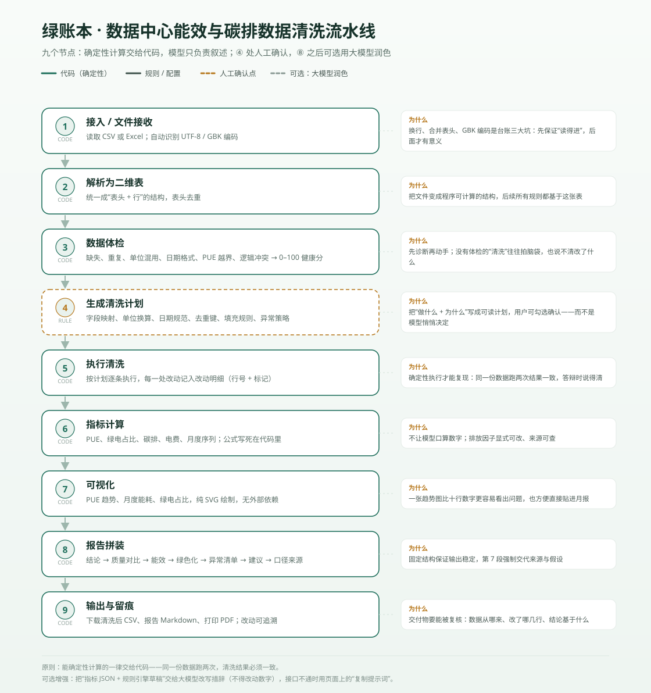

- 1上传数据
- 2体检与确认
- 3执行清洗
- 4分析报告
把一张乱糟糟的能耗台账，变成一份能进月报的分析
上传机房电费 / 能耗 / PUE 台账（Excel 或 CSV），系统先做数据体检，再按确认过的规则清洗，最后算出 PUE、绿电占比、碳排并生成报告。每一步都能看到“改了什么、为什么改”。
- 缺失 / 重复 / 单位混用 / 日期格式
- PUE 边界与口径校验
- 绿色化指标与碳排估算
点击选择文件，或把文件拖到这里
支持 .csv / .xlsx / .xls · 建议单表 < 5 MB
没有数据？用内置示例试一遍
三套示例覆盖“干净数据 / 脏数据 / 编码问题”，用来演示与测试。
口径设置（可改）
修改后重新生成报告即可生效，不影响已完成的清洗结果。
数据体检与清洗计划
—
—数据健康分
发现的问题
字段识别结果
系统按别名表识别语义字段；未被识别的列会保留在原始数据中，但不参与计算。
清洗计划（可勾选执行哪些步骤）
每一步都写明“做什么”和“为什么”。取消勾选表示保留原样，报告里会记录该决定。
清洗完成
—
清洗动作统计
改动明细（前 12 条）
每一行被改了什么都会记录下来；这是“可复核”的关键，也是报告里“测试与优化”的素材。
清洗后数据预览
分析报告
—
异常清单（仅标记，不删除）
把上面的指标交给大模型，生成更自然的分析文字。不填 API Key 也能用——本页的报告由规则引擎生成，已经包含全部数字与结论。
说明：浏览器直连模型接口可能被跨域策略拦截；若失败，用“复制提示词”到 Coze / 任意大模型网页即可，效果一致。
它到底做了什么：九个节点的流水线
一句话原则：能确定性算的交给代码，模型只负责叙述。所以同一份数据跑两次，清洗结果一定一样——这是“可复现”，也是答辩时最好讲的一句话。

每个节点做了什么、为什么这样做
它对应作业要求的哪几条
提示词资产（提交材料用）
① 角色系统提示词
② 清洗计划提示词（强制 JSON）
③ 分析报告提示词
④ 边界与拒答提示词
口径、来源与边界
指标口径
- PUE = 数据中心总能耗 ÷ IT 设备能耗，理论下限 1.0；风冷机房常见 1.3–1.8。
- 绿电占比 = 绿电电量 ÷ 总用电量，必须 ≤ 100%。
- 碳排放 = 用电量(MWh) × 电网排放因子(tCO₂/MWh)。
- 数据健康分 = 完整性 30 + 一致性 30 + 有效性 20 + 唯一性 20。
来源与假设
- 排放因子默认 0.5703 tCO₂/MWh（生态环境部全国电网平均因子，2022 年），可在“口径设置”修改，报告会注明。
- 单位修正基于量级差（约 1000 倍）判定，修正行会在“改动明细”中列出，可人工复核。
- 日期歧义（如 05/01/2025）默认按 M/D/Y 解析，并在计划中标注。
- 示例数据为脚本生成的模拟台账，不含任何真实企业信息。
边界：本工具不替代现场能效诊断，也不做负荷预测与投资回报测算；异常值只标记不删除，避免掩盖真实问题。